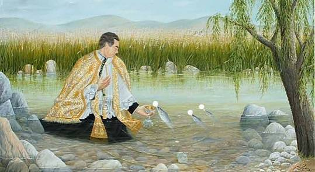
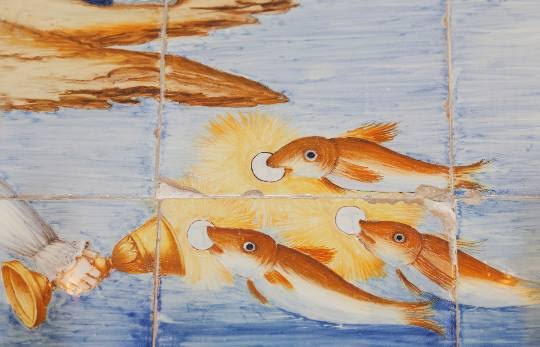
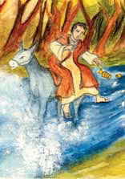
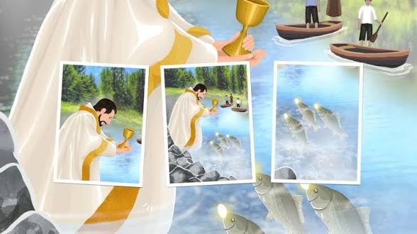
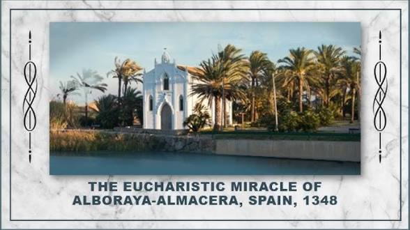

The 1348 Eucharistic miracle of Alboraya-Almácera, Spain, occurred when three fish miraculously retrieved consecrated Hosts swept away by a river current and returned them to a priest.
While a priest was crossing the swollen Carraixet River to bring Viaticum to the dying, he was knocked off his mule, and the consecrated Hosts were swept into the current. To the astonishment of onlookers, three fish appeared, each holding a Host in its mouth. They approached the riverbank and carefully deposited the Hosts into the ciborium extended by the priest.
This event is commemorated by the Ermita del Miracle dels Peixets (Hermitage of the Miracle of the Little Fish), built on the coastal site. The historic ciborium remains preserved, featuring an inscription that reads: "Who will deny the Mystery of this Bread, when a dumb fish preaches to us Faith?"